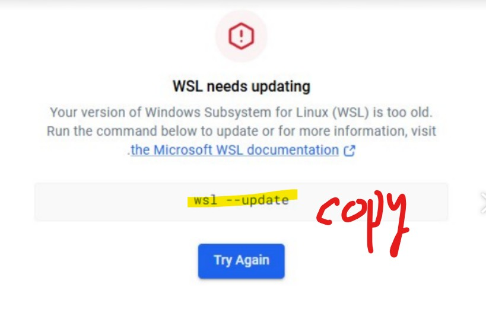
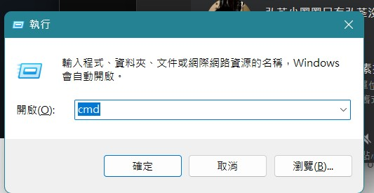
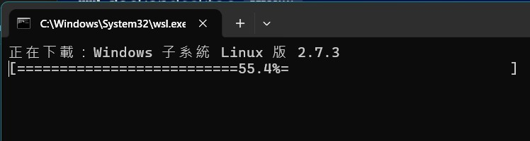
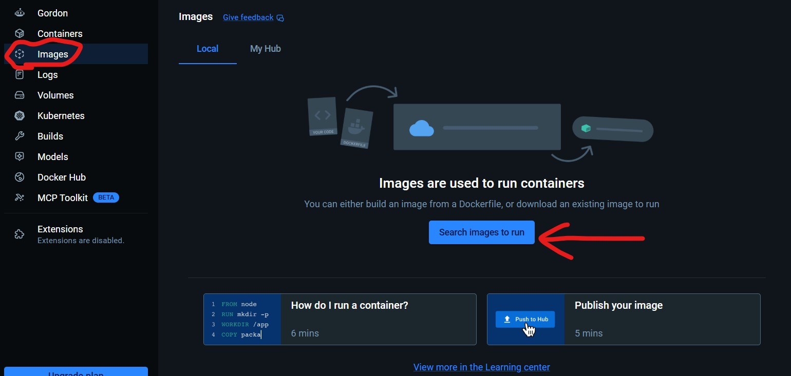
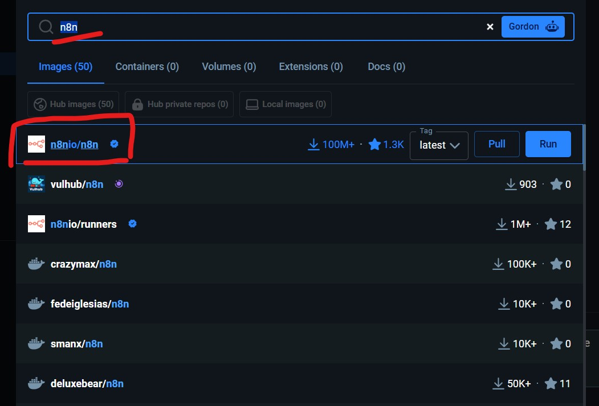
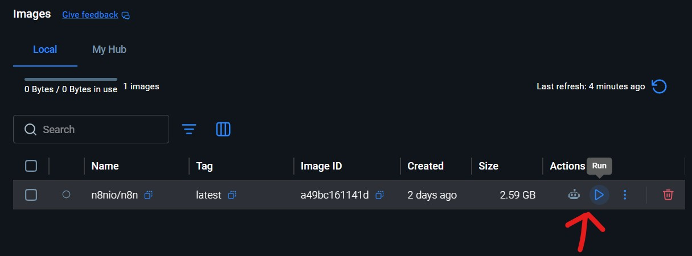
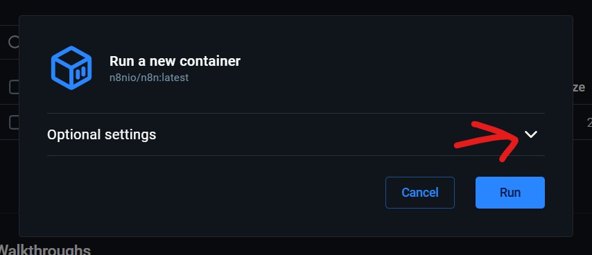
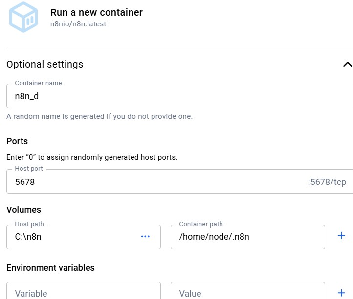
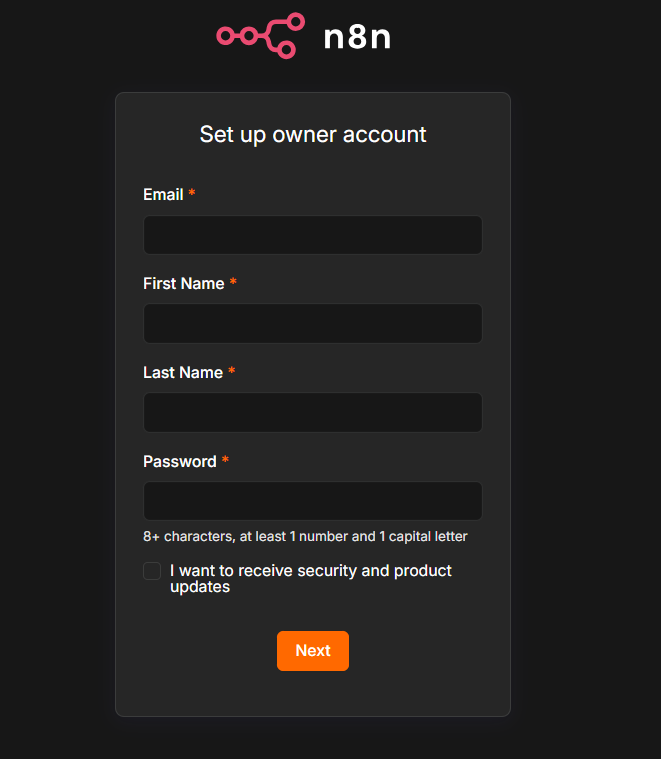

PART 1
安裝 Docker Desktop
從下載到第一次成功打開 Docker，途中會處理 WSL 更新提示。
到 Docker 官方網站下載安裝檔，
選擇適合自己電腦的版本。
Windows 電腦大多選
Windows - AMD64（一般 Intel / AMD 處理器都是這個）；
如果你的是 ARM 處理器才選 ARM64。
前往 Docker 官方下載頁
2
安裝後開啟，會跳出「WSL needs updating」
安裝完打開 Docker，第一次很可能跳出一個紅色驚嘆號視窗，寫著
「WSL needs updating」（你的 WSL 版本太舊）。
這是正常的，不是壞掉。它要你跑畫面中那行指令來更新。
畫面上 黃色標起來的 wsl --update 就是等下要用的指令。

📸 截圖位置
把「WSL needs updating」那張圖
存成 images/step-wsl-update.png
看到這個畫面先別關，接下來要去更新 WSL
同時按下鍵盤的 ⊞ Win + R，會跳出「執行」小視窗。
在裡面輸入 cmd，按 確定，就會打開「命令提示字元」黑色視窗。
是 Win + R（鍵盤左下角的視窗圖示鍵），不是 Ctrl + R 喔。

📸 截圖位置
把「執行視窗輸入 cmd」那張圖
存成 images/step-run-cmd.png
在「執行」視窗輸入 cmd 後按確定
在黑色的命令提示字元視窗裡，輸入下面這行指令後按 Enter。
不想手打可以直接點右邊的「複製」按鈕：
按下 Enter 後，畫面會開始下載「Windows 子系統 Linux 版」，
出現一條進度條（例如 55.4%）。讓它跑完就好，不用做任何事，
速度看你的網路，通常一兩分鐘。

📸 截圖位置
把「下載進度條」那張圖
存成 images/step-downloading.png
看到進度條就對了，等它到 100%
✓
回到 Docker，按藍色的「Try Again」
命令提示字元跑到 100%、看到「WSL 已更新」之類訊息後，
回到一開始那個 WSL needs updating 視窗（如果關掉了就重開 Docker），
點下方那顆藍色的 Try Again 按鈕。Docker 就會正常啟動，看到鯨魚儀表板畫面，
第一段完成！
PART 2
用 Docker 跑起 n8n
這段不用打指令，全程在 Docker 的圖形介面點一點就好。
打開 Docker Desktop 後，看左邊那排功能選單，點 「Images」（一個立方體圖示）。
Images 就是「待命中的程式映像檔」——可以想成「還沒打開的 App 安裝包」，等下我們要去抓 n8n 的安裝包。

📸 截圖位置
把「Images 紅圈」那張圖
存成 images/step-images-tab.png
左側選單中段就是 Images
7
點「Search images to run」搜尋 n8n
在 Images 頁面中央，點藍色的 「Search images to run」 按鈕。
跳出搜尋框後，輸入 n8n，挑列表第一個有藍色勾勾的 n8nio/n8n（官方版、最多人下載的那個），按右邊的 Pull 把它抓下來。
看到有藍色 ✓ 認證打勾的才是官方版本，不要選到其他人 fork 的版本。

📸 截圖位置
把「搜尋 n8n 結果」那張圖
存成 images/step-search-n8n.png
選第一個官方版 n8nio/n8n，按 Pull
Pull 完成後（通常一兩分鐘，約 2.5 GB），會回到 Images 列表，看到一行 n8nio/n8n。
把滑鼠移到那行右邊的 Actions 欄位，點藍色的 ▶ Run 三角形按鈕，準備把它跑起來。

📸 截圖位置
把「Images 列表 Run 按鈕」那張圖
存成 images/step-run-image.png
就是那個藍色三角形 ▶
跳出 「Run a new container」 視窗，預設只看到一個 Optional settings 收合區。
不要直接按 Run——點右邊的 「⌄」展開箭頭，把進階設定打開來填，這樣 n8n 才會用正確的網址、資料才不會在關掉後不見。

📸 截圖位置
把「Optional settings 展開箭頭」那張圖
存成 images/step-optional-settings.png
先點箭頭展開，再填資料
展開後會看到一堆欄位，只需要填這三項，其他留空：

📸 截圖位置
把「填好設定」那張圖
存成 images/step-container-config.png
填好三項後，按右下角的 Run
Volumes 在幹嘛？它把你電腦的 C:\n8n 資料夾「連通」到 n8n 容器內部，讓 n8n 把資料寫在這個資料夾。這樣就算把容器砍掉重建，你的工作流程也不會不見。
按下 Run 後，會跳到 Containers 頁面，看到一個叫 n8n_d 的容器正在執行。
點進去看 Logs，最後一行會出現一個網址，通常是 http://localhost:5678，
點下去就會在瀏覽器打開 n8n 的設定畫面，跟著畫面建立帳號就能開始用了。
n8n 啟動畫面範例（最後一行）
Editor is now accessible via:
http://localhost:5678

📸 截圖位置
把「n8n Set up owner account」那張圖
存成 images/step-n8n-setup.png
看到這個畫面就成功了！填好 Email / 姓名 / 密碼，按 Next 開始用 n8n
密碼規則：至少 8 個字、含 1 個數字、含 1 個大寫字母。這個帳號是你 n8n 的管理員，記得記下來。
🎉 全部完成！n8n 已經跑起來了
之後想再次啟動，打開 Docker → Containers → 找到 n8n_d → 按 ▶ 即可，不用再重做這些步驟。
🚨 卡關自救
打開 localhost:5678 連不上？
別慌，95% 都是這幾種小問題。下面用「三步自我診斷」幫你抓出來，搞不懂英文錯誤訊息也沒關係，下面有翻譯。
📍 先理解：localhost:5678 在講什麼？
想像 Docker 容器是一棟蓋在你電腦裡的小房子，localhost 就是「你自己這台電腦」的地址，
:5678 是房子的門牌號碼。
所以 http://localhost:5678 = 「請打開我電腦裡 5678 號那間房子的大門」。
連不上 = 那個門牌號碼的房子根本沒蓋好、沒開門，或者被路障擋住了。
🔍 三步自我診斷
1容器到底有沒有在跑？
打開 Docker Desktop → 左邊點 Containers，找到 n8n_d 那一行，看狀態欄。
❓ 狀態是「Running」綠燈嗎？
✅ 是 → 繼續第 2 步
❌ 不是 → 按那行右邊的 ▶ 啟動
💡 容器灰色 / Exited 是什麼意思？就是房子蓋好了但沒開門。按 ▶ 啟動它就好；如果一啟動又立刻變灰，往下看第 2 步。
2有沒有別的東西也在搶 5678？
最常見的狀況：你以為第一次安裝失敗，又重做了一遍，結果不知不覺開了兩個 n8n，兩個都想用 5678，互相打架。
❓ 在 Containers 頁面，有沒有看到「兩個」n8n 容器？
❌ 有兩個 → 把舊的那個刪掉（垃圾桶圖示）
✅ 只有一個 → 繼續第 3 步
💡 怎麼判斷哪個要刪？看建立時間，留比較新的那個。或兩個都刪掉，從 Images 重新 Run 一次。
3瀏覽器網址有沒有打對？
有時候只是手快打錯字。確認瀏覽器網址列是完全長這樣：
常見打錯：
❌ https://（多了 s，n8n 本機跑沒有加密憑證）
❌ localhost:5679（port 打錯，你設定填的是 5678 就一定是 5678）
❌ localhost/5678（用斜線不是冒號）
📖 常見錯誤訊息中文翻譯
Docker 跳出紅色錯誤訊息看不懂？對照下面這張卡找你看到的關鍵字。
listen tcp4 0.0.0.0:5678: bind: address already in use
🔍 意思：5678 這個 port 已經被佔走了——通常是你開了第二個 n8n，跟第一個搶。
✅ 解法：去 Containers 找出兩個 n8n，刪掉其中一個。或新容器的 Host port 改成 5679。
Error response from daemon: Conflict. The container name "/n8n_d" is already in use
🔍 意思：已經有一個叫「n8n_d」的容器了，名字不能重複。
✅ 解法：容器名字改一個（例如 n8n_d2），或先去 Containers 把舊的 n8n_d 刪掉。
driver failed programming external connectivity
🔍 意思：Docker 想把容器接到你電腦的網路，但接不上去。九成是 port 衝突，少數是 Docker 內部網路壞掉。
✅ 解法：先檢查有沒有兩個容器搶同一 port；如果沒有，重啟 Docker Desktop（右下角小鯨魚右鍵 → Restart）。
無法連上這個網站 / This site can't be reached / ERR_CONNECTION_REFUSED
🔍 意思：瀏覽器在 5678 找不到任何東西回應它——容器沒在跑，或還在啟動中。
✅ 解法：(1) 回去 Docker 確認容器是綠燈 Running；(2) 如果剛按啟動，等 30 秒再開——n8n 首次啟動要建資料庫。
🏢 用公司電腦特別會卡的事
①
沒有 admin 權限裝 Docker
安裝時跳出 UAC 視窗要密碼，但你沒有公司電腦的管理員密碼。
找 IT：請 IT 幫你裝，或請他們把你的帳號加進「Hyper-V Administrators」群組。
②
公司禁用 WSL / Hyper-V
跑 wsl --update 被拒絕，或 Docker 一直啟動失敗說「Hyper-V 未啟用」。
找 IT：有些公司資安政策會關掉這些功能，要請 IT 開白名單。
③
公司 Proxy 擋掉 Docker Hub
Pull n8n image 時卡住或 timeout，下載完全沒進度。
解法：在 Docker Desktop → Settings → Resources → Proxies 填公司 Proxy 設定（問 IT 拿 proxy 網址）。或換到家裡網路試。
④
防火牆擋 localhost？
這個幾乎不會發生。localhost 是你電腦跟自己講話，Windows 防火牆預設不會擋。
不用煩惱這個。如果真的懷疑，暫時關掉 Windows Defender 防火牆測一下——但通常問題不在這。
還是搞不定？把錯誤訊息整段截圖（紅色那段英文很重要！），加上 Docker 的 Containers 頁面截圖，問問身邊懂的人——這兩張圖通常就足夠診斷 9 成問題。
常見問題
按了 Try Again 還是出現一樣的視窗怎麼辦？
先確認步驟 4 的 wsl --update 真的「跑完了」（進度條到 100%、回到可以打字的狀態）。如果還是不行，重新開機一次電腦，再開 Docker 通常就會過。
命令提示字元說「wsl 不是內部或外部命令」？
代表你的 Windows 還沒裝過 WSL 功能。可以改在命令提示字元輸入 wsl --install 先安裝，裝完重開機，再回來跑 wsl --update。
一定要懂指令才能用 Docker 嗎？
不用。這行指令只是一次性的更新動作，複製貼上就好。裝好之後日常操作多半在 Docker Desktop 的圖形介面裡點一點即可。
下載很慢卡在某個百分比不動？
多半是網路問題。可以先關掉再重跑一次 wsl --update，或換個網路環境（避開公司／學校有限制的網路）再試。
n8n 容器啟動了，但打開 localhost:5678 沒反應？
(1) 確認 Docker Desktop 的 Containers 頁面，n8n_d 那行的狀態是「Running」（綠色）；(2) 確認步驟 10 的 Host port 真的填的是 5678；(3) 試著等個 30 秒再開——n8n 第一次啟動要建資料庫，需要一點時間。
Host path 為什麼用 C:\n8n？我可以改別的資料夾嗎？
可以。這只是「你電腦上拿來存 n8n 資料的資料夾」，放哪都行，只要寫成 Docker 看得懂的路徑（例如 D:\我的資料\n8n）。但 Container path（/home/node/.n8n）不能改，那是 n8n 程式內部固定要寫資料的位置。
下次想再開 n8n 怎麼做？
打開 Docker Desktop → 左邊點「Containers」→ 找到 n8n_d 那行 → 按右邊的 ▶ 啟動。不用再 Pull、不用再設定，秒開。